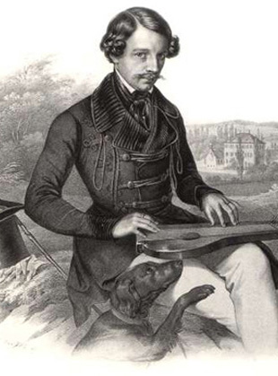

Duke Maximilian Joseph in Bavaria
Duke Maximilian Joseph in Bavaria (4 December 1808 – 15 November 1888), known informally as Max in Bayern, was a member of a junior branch of the House of Wittelsbach and a promoter of Bavarian folk-music. He is most famous today as the father of Empress Elisabeth of Austria ("Sisi") and great-grandfather of King Leopold III of Belgium.
Maximilian Joseph was born at Bamberg, the only son of Duke Pius August in Bavaria (1786–1837) and his wife, Princess Amélie Louise of Arenberg. On September 9, 1828, at Tegernsee, Maximilian Joseph married Princess Ludovika of Bavaria, the sixth daughter of King Maximilian I Joseph of Bavaria, his father's cousin. They had ten children.
In 1834 he purchased Possenhofen Castle on Lake Starnberg; this was his major residence for the rest of his life. In 1838 he acquired Unterwittelsbach Castle (today housing a "Sisi" museum) near the site of Burg Wittelsbach, the ancestral seat of the House of Wittelsbach. Maximilian Joseph died in Munich. He and his wife are buried in the family crypt in Tegernsee Abbey, a former monastery which Ludovika's father, King Maximilian I Joseph, had acquired in 1817. At the same time of the secularisation, Duke Maximilian Joseph's grandfather Duke Wilhelm in Bavaria had also purchased a former monastery, Banz Abbey. Both properties, Tegernsee and Banz, are still today owned by Prince Max, Duke in Bavaria.
Princess Ludovika of Bavaria

Princess Ludovika of Bavaria (Marie Ludovika Wilhelmine; Mary Louise Wilhelmina; 30 August 1808 – 25 January 1892) was the sixth child of King Maximilian I Joseph of Bavaria and his second wife, Karoline of Baden, and the mother of Empress Elisabeth of Austria. She was born and died in Munich.
Ludovika married Maximilian Joseph, Duke in Bavaria (December 4, 1808 - November 15, 1888), whose father Duke Pius August in Bavaria was her cousin, on September 9, 1828, in Tegernsee. Ludovika was always frustrated that, unlike her elder sisters (who married kings and Austrian archdukes), she would not be marrying someone with a grand title, but rather a peculiar and childish duke who had a fondness for circuses. However, Ludovika was determined to create dynastic marriages for her daughters. She and her husband had ten children, including Empress Elisabeth of Austria and Queen Maria Sofia of the Two Sicilies.